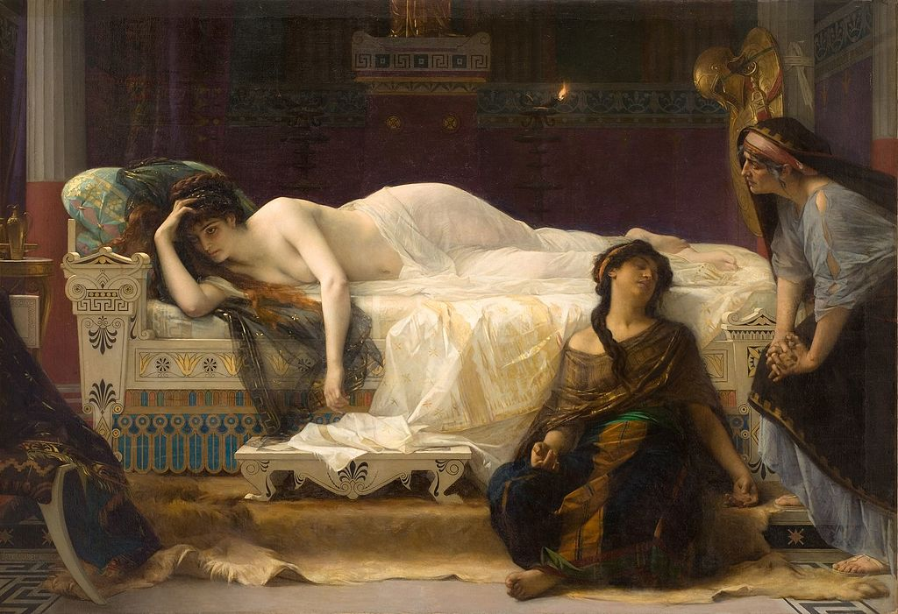

I love books. I especially enjoy reading poetry and classical tragedies written by famous authors like Victor Hugo or Jean Racine. Here are some books I definitely recommend. All of them are in French, some are literary, others are novels.
This is a tragic play written by French playwriter Racine in the XVIIth century, inspired by Antique Ages.
It is the story of Phèdre, a queen in Ancient Greece whose husband, King Thésée, dies on one of his adventures (or does he? ;) ). The queen, cursed by Venus, goddess of love, falls in love with her step son Hipolyte.
Unable to hold her secret in, she reveals her passion towards him, and that's where things get twisted.

After the tragic death of his wife and daughter in a car accident, Victor Hugo releases a book of poems that changes the world of French Literature forever.
This book holds one of the most amazing poems in French Literature, "Demain, dès l'aube", a poem in which he tells his readers how eager he is to go to his daughter's grave.